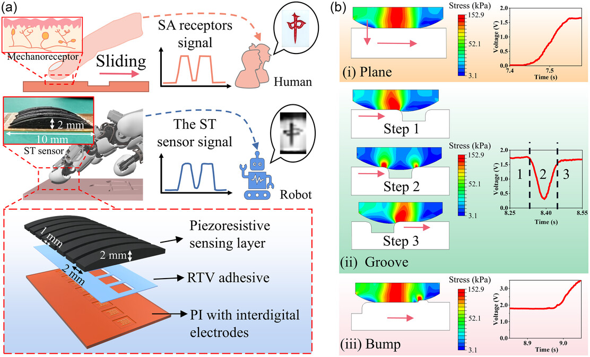
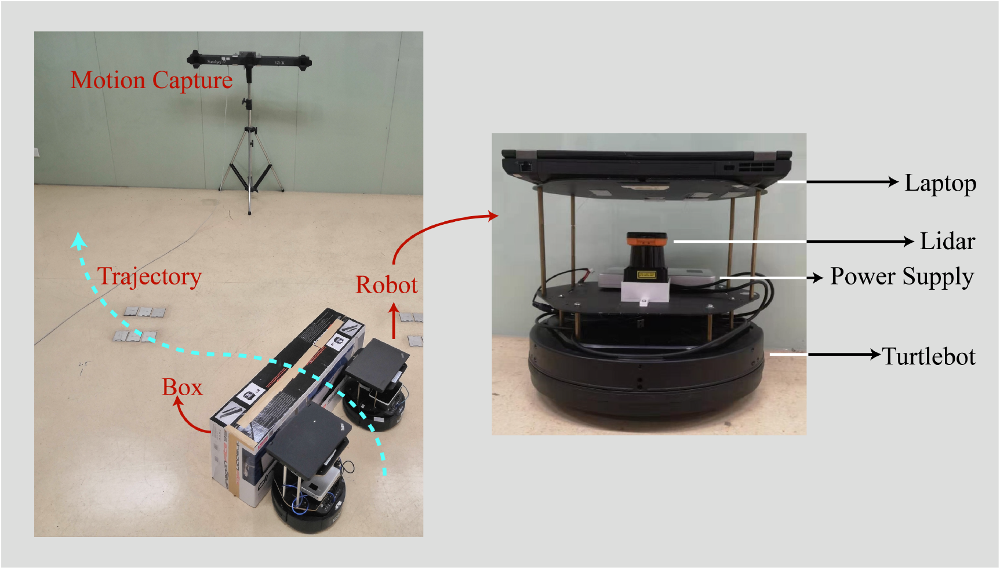

|
Zhixian Hu 胡智娴 I'm a PhD student in Industrial Engineering, Purdue University, under the supervision of Prof. Juan P. Wachs and Prof. Yu She. |

|
EducationCurrent Ph.D. student in Industrial Engineering, in progress, Purdue University. M.Phil. in Computer and Information Engineering, 2022, The Chinese University of Hong Kong, Shenzhen. B.Eng. in Electronic Information Engineering, 2020, The Chinese University of Hong Kong, Shenzhen. |
News[May 2025] I presented our work "a magnetic-actuated vision-based whisker array for contact perception and grasping" at ICRA 2025 in Atlanta, United States. |
ResearchI'm interested in robotic perception and cognition, especially robot tactile sensing. * indicates equal contribution. |
|
A Magnetic-Actuated Vision-Based Whisker Array for Contact Perception and Grasping
Zhixian Hu, Juan Wachs, Yu She ICRA, 2025 paper / poster / video/ bibtex This study presents a vision-based magnetic-actuated whisker array sensor that integrates both tactile sensing and the manipulation of delicate objects. |
|
|
Self-Adaptive Perception of Object's Deformability with Multiple Deformation Attributes Utilizing Biomimetic Mechanoreceptors
Waner Lin*, Ziya Wang*, Yingtian Xu, Zhixian Hu, Wenyu Zhao, Zhihao Zhu, Zhenglong Sun, Guoxing Wang, Zhengchun Peng Advanced Materials, 2024 paper / bibtex This study proposes an innovative design of a tactile sensor that integrates the capabilities of two slow-adapting mechanoreceptors within a soft medium, allowing self-decoupled sensing of local pressure and strain at specific locations within the contact interface. |
|
|
Machine learning for tactile perception: advancements, challenges, and opportunities
Zhixian Hu*, Lan Lin*, Waner Lin, Yingtian Xu, Xuan Xia, Zhengchun Peng, Zhenglong Sun, Ziya Wang Advanced Intelligent Systems, 2023 paper / bibtex This paper provides a comprehensive review of the advancements, challenges, and opportunities in the field of machine learning for tactile perception. |
|
|  |
Robust and Flexible Sliding Tactile Sensor for Surface Pattern Perception and Recognition
Zhihao Zhu, Yingtian Xu, Waner Lin, Zhixian Hu, Zhuofan Lin, Zhenglong Sun, Zhengchun Peng, Ziya Wang Advanced Intelligent Systems, 2023 paper / bibtex This paper presents a soft sliding tactile sensor that enables high-accuracy 3D surface recognition using low-density arrays and deep learning. |
|
Augmented Pointing Gesture Estimation for Human-Robot Interaction
Zhixian Hu, Yingtian Xu, Waner Lin, Ziya Wang, Zhenglong Sun ICRA, 2022 paper / bibtex This paper propose an augmented pointing gesture estimation method to enable richer and programmable instructions to be given to the robots. |
|
|  |
Collaborative Object Transportation by Multiple Robots with Onboard Object Localization Algorithm
Zhixian Hu*, Zhixiang Zhao*, Lianxin Zhang, Hengli Liu, Ning Ding, Zhenglong Sun, Tin Lun Lam, Huihuan Qian ROBIO, 2019 paper / bibtex This paper presents a multi-robot leader-follower system with onboard object localization for collaborative object transport and trajectory tracking. |
Experience[Jun-Aug 2020] Product intern at Ubtech Robotics, Shenzhen, China. |
|
Website template from Jon Barron's website. |